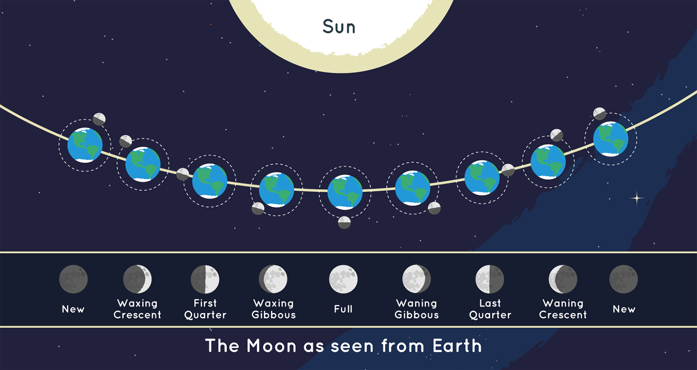
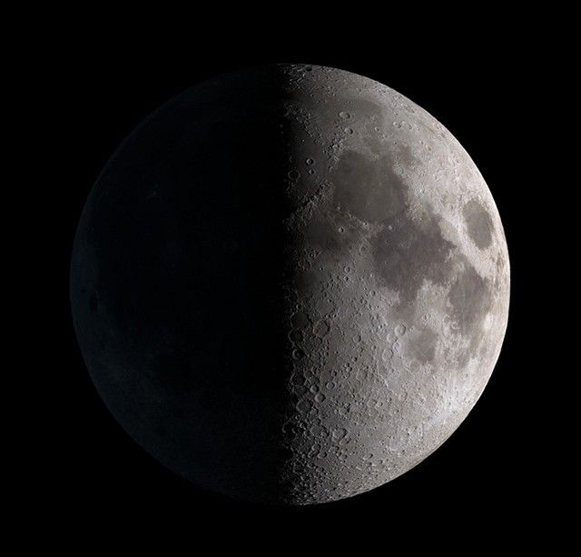
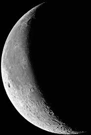

Introducción
Las fases de la luna son cambios visuales que ocurren debido a la posición relativa entre la Tierra, la Luna y el Sol. Este ciclo se repite aproximadamente cada 29.5 días.

Luna nueva
Ocurre cuando la Luna está entre el Sol y la Tierra y su parte iluminada no es visible desde nuestro planeta.

Luna creciente
Se observa una pequeña fracción iluminada que aumenta progresivamente.

Primer cuarto
La mitad derecha de la Luna está iluminada.

Luna gibosa creciente
Más de la mitad de la Luna está iluminada, pero aún no es luna llena.

Luna llena
Toda la cara visible de la Luna está completamente iluminada.

Luna gibosa menguante
Comienza a disminuir la parte iluminada después de la luna llena.

Último cuarto
La mitad izquierda de la Luna está iluminada.

Luna menguante
Solo se observa una pequeña parte iluminada antes de volver a luna nueva.

Luna en movimiento
Vista general desde el espacio
Curiosidades sobre la Luna
La Luna se aleja aproximadamente 3.8 cm de la Tierra cada año. Su gravedad es 6 veces menor que la de nuestro planeta.
Registro de Interés
Déjanos tus datos para recibir más información sobre las fases lunares.